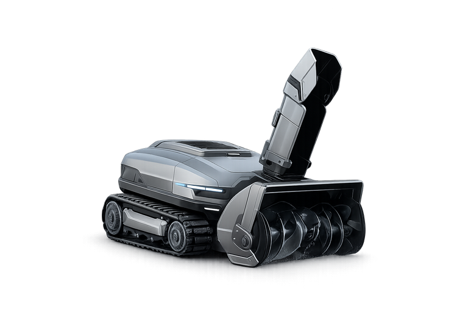

Ice Titan er utviklet for norske vinterforhold med avansert sensorteknologi, autonom navigasjon og kraftfulle motorer som håndterer selv de tyngste snøfallene. Maskinen arbeider i kulde, mørke og dyp snø – helt på egen hånd.
Med robust konstruksjon, smart batteristyring og kunstig intelligens er Ice Titan den perfekte partner for vintersesongen.
Ice Titan analyserer terreng, hindringer og snødybde i sanntid. Ved hjelp av sensorer og algoritmer planlegger den ruter som gjør arbeidet effektivt og trygt – uten at du trenger å være til stede.
Med kraftige motorer og et intelligent batterisystem kan Ice Titan håndtere lange arbeidsøkter, tung snø og krevende bakker. Den er bygget for stabile leveranser gjennom hele vintersesongen.